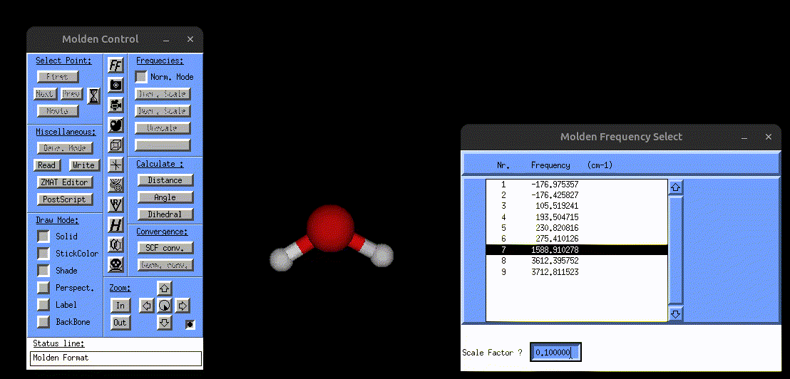
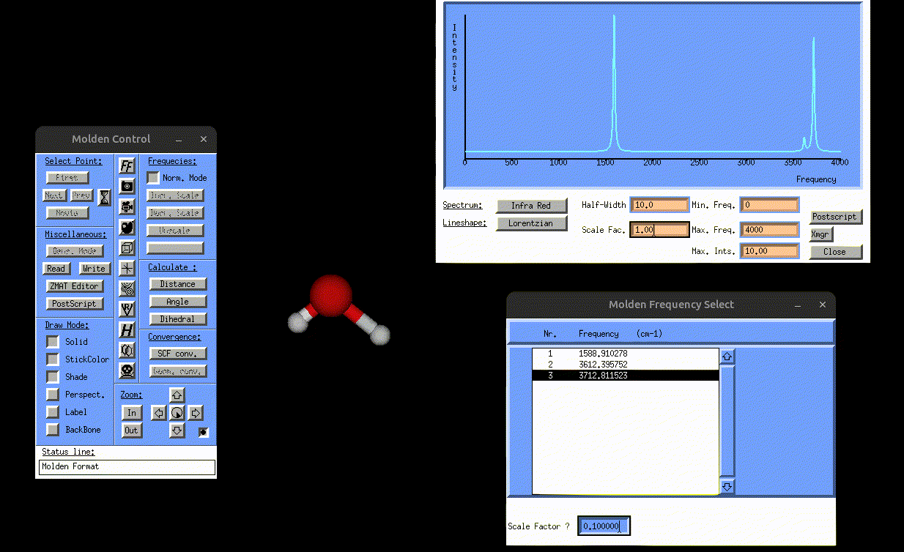
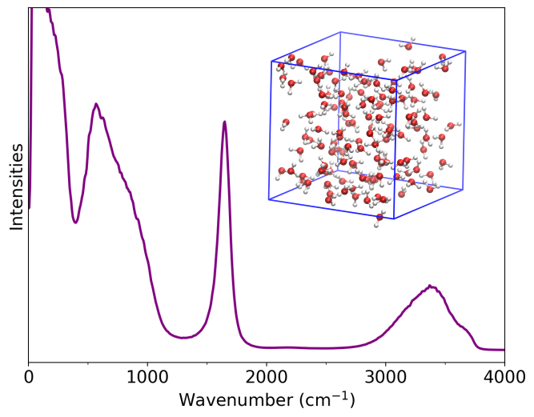

Static spectral calculations for water molecule¶
Normal mode analysis¶
The test calculation on the directory /Static/Normal_mode_analysis demonstrates how one can carry out a normal mode analysis for a simple water molecule providing the and giving the geometry file water.xyz and the file which contains the atomic forces water-force.data (see File Formats for more details on how to append the atomic forces for each displaced structure.) The input file is then given as:
&global
spectra NMA
&end global
&system
filename water.xyz
&end system
&static
&hessian
force_file water-force.data
&end hessian
displacement 0.001
write_mol_file
&end static
This calculation generates three output files named:
normal_mode_freq.txt→ contains normal mode frequencies
-176.97535653970249
-176.42583329045769
105.51923823199118
193.50471510887877
230.82082299950909
275.41014020547584
1588.9102733774585
3612.3956359220965
3712.8115592866070
where the last 3 frequencies correspond to the bending, symmetric stretching and asymmetric stretching modes of water. The first 6 modes correspond to the translational and rotational mode frequencies and can be disregarded by the user. The reason some of them show negative frequencies is because the molecular structure used for the normal mode analysis is not tightly optimized.
normal_mode_displ.txt→ contains normal mode coordinates
# first atom in first vibrational mode
0.94616809213469699 2.7946421871026641E-005 -2.9767288434384802E-002
# second atom in first vibrational mode
0.22740474089226850 1.2654307516200803E-002 -8.3175715860303919E-003
# third atom in first vibrational mode
0.22740216306823607 -1.2642516133164316E-002 -8.1266552822378130E-003
...
# first atom in last vibrational mode
0.26728409439256395 4.0116848009155714E-006 -8.2828918268760410E-007
# second atom in last vibrational mode
-0.53240940739379650 -0.42525005582409653 -9.0204921754870363E-007
# third atom in last vibrational mode
-0.53238715822178384 0.42523609861802070 -1.2091347908508780E-010
vibrations.mol→ can be opened with MOLDEN to visualize the normal mode vibrations
The following screenshot shows how one can use the vibrations.mol file to visualize the normal modes via MOLDEN:

Visualization of the bending mode of water.
Static IR and Raman spectra for water molecule¶
The next example is about the static IR and Raman calculation of the water molecule. Starting with the IR calculation on /Static/IR/, one can see that now there are some new files in addition to the input.txt and water.xyz files, named:
normal_mode_freq.txtandnormal_mode_displ.txt→ normal mode frequencies and normal mode coordinates (See File Formats for the formatting of these file)dipoles_water.xyz→ contains the dipole moments for all displaced structures (See File Formats for the formatting)
This example does not perform a normal mode analysis, and instead uses the user-provided normal mode frequencies and coordinates. Running the calculation generates two files:
result_static_ir.txt→ contains broadened IR spectrumIR.mol→ can be opened with MOLDEN to visualize the normal mode vibrations, but this time also the IR spectrum, as shown in the following gif:

Visualization of the antisymmetric stretching mode of water, alongside the IR spectrum.
The IR spectrum can be obtained directly using the chosen broadening method and full width at half maximum (FWHM). Alternatively, one may plot the Gaussian-broadened file result_static_ir.txt produced by vibrant with the desired FWHM value, for example using Python or Gnuplot. An example Python script is given in the Quick Start section.
The Raman calculation can be found in the directory /scratch/ekin/Examples/Static/Raman. This example uses again the atomic forces to calculate the normal mode frequencies and coordinates. It also uses the polarizabilities.dat file for the polarizability tensors. Details on the format of this file is given in the File Formats section.
&global
spectra R
temperature 300
fwhm 5
&end global
&system
filename water.xyz
&end system
&static
diag_hessian y
&hessian
force_file water-force.data
&end hessian
displacement 0.001
write_mol_file
&end static
&dipoles
type_dipole dfpt
static_pol_file polarizabilities.dat
&end dipoles
&raman
laser_in 2.540639
&end raman
This calculation generates four files, again the normal mode frequency and normal mode coordinate files normal_mode_freq.txt and normal_mode_displ.txt, and also the result_static_raman.txt file which contains the broadened frequencies and the Raman spectrum and can be plotted with, for example, Python. Additionally, Raman.mol can again be opened with MOLDEN to visualize the normal modes alongside the Raman spectrum.
Bonus: Power spectrum of liquid water¶
After running the static calculations for the water molecule, one can also calculate the MD-based power spectrum of liquid water, as provided in the directory /MD-based/Power_Spectrum/. The directory includes the waterbulk-pos-1.xyz file which contains the atomic positions of the water simulation box for several MD snapshots, and also the input file input.txt. Running the calculation produces two files:
power_spec.txt→ contains the power spectrumresult_cvv.txt→ contains the velocity autocorrelation data
The files can be visualized with a Python script as described above. The resulting power spectrum is shown below:

Power spectrum of liquid water.